Architecture through computation.
Exploring the relationship between
architecture, environmental performance,
geometry and digital design.
My work focuses on architectural systems,
parametric design, environmental strategies
and the use of computational tools as part
of the design process.
Location
ALGIERS — 2026
Education
M.Arch / Environment & Technology
Scroll to explore
Profile
About me
Architectural design, computational thinking
and environmental performance are at the
core of my approach.
Yanis Nennouche
Architect
Architecture
through
computation.
I am an architect interested in the intersection
between architectural design, environmental
performance and computational methods.
My approach considers digital tools not only
as representation tools, but as part of the
design process itself — generating geometry,
testing performance and developing architectural
systems.
I am particularly interested in biomimicry,
parametric design, environmental simulation,
computational geometry and generative approaches
to architecture.
Education
Master of Architecture — Environment &
Technology
University of Algiers 1
A selection of architectural projects developed
through academic and graduation work.
The portfolio focuses on design process,
architectural expression, environmental thinking
and computational methods.
A graduation project proposing the
redevelopment of the zoo area of
Jardin d'Essai du Hamma in Algiers.
Inspired by the geometry of a snail shell,
the project explores architecture as an
ecosystem where geometry, climate,
material and living systems interact.
Location
Jardin d'Essai du Hamma
Algiers, Algeria
Type
Public / Cultural
Area
1.2 hectares
Approach
Biomimicry / Environment /
Computational Design
01
Concept
The architectural concept is derived from
the spiral geometry of a snail shell.
The shell becomes both a formal and
environmental strategy, generating a
continuous circulation sequence while
creating controlled climatic conditions
for different ecosystems.
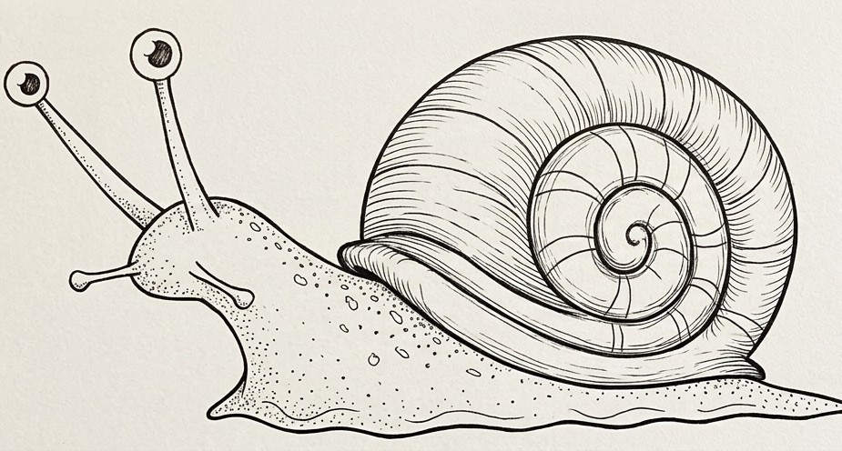
02
Genesis
The project develops from an exploration
of natural geometry, movement and
environmental adaptation.
The spiral becomes a generative system
from which the building form, circulation,
spatial sequence and relationship between
the different ecosystems are progressively
developed.
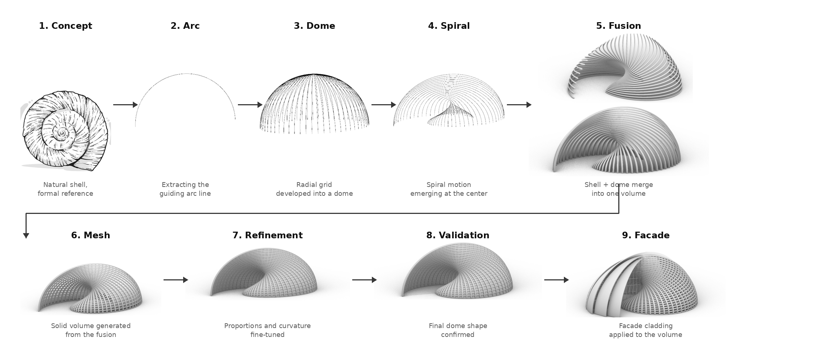
Concept development
Genesis
03
Plans
Site / Site & Ground Floor Plan / Spatial organisation
Architectural perspective illustrating
the spatial atmosphere and relationship
between the interior environment and
the architectural envelope.
Eco Dôme du Hamma
Architectural perspective
07
Materials
Material selection is considered as part of the
environmental performance of the Eco Dôme.
The envelope and construction materials are selected
according to their thermal behaviour, transparency,
adaptability and relationship with the controlled
ecosystems inside the dome.
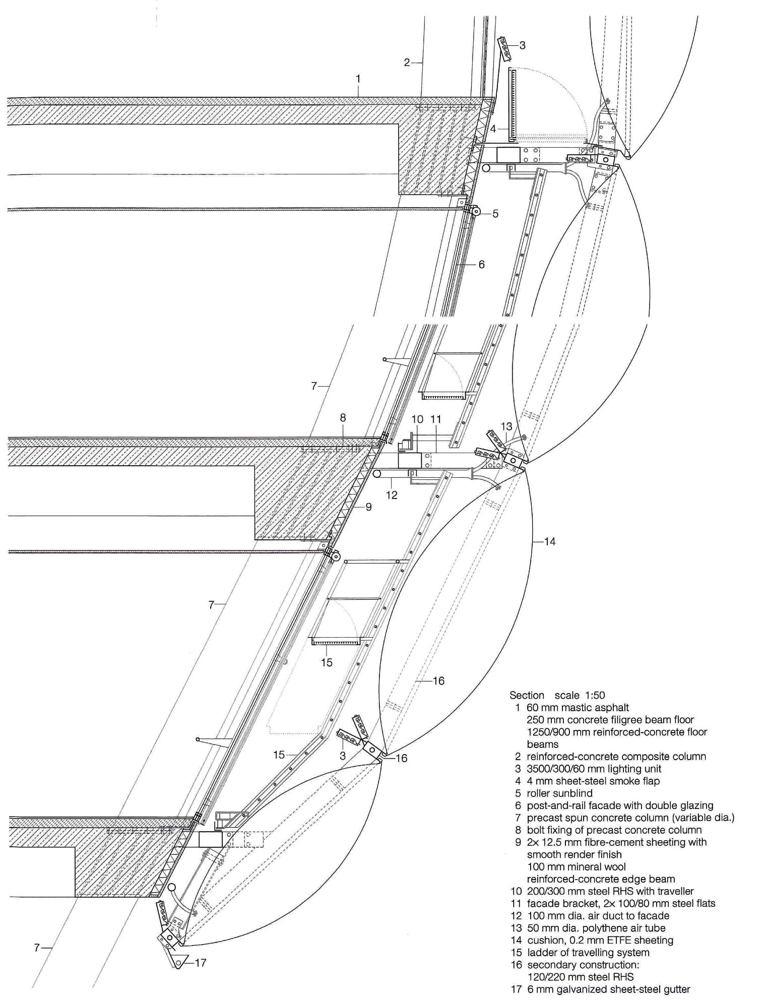
01 / ETFE envelope
Lightweight and highly transparent envelope
used to create the climatic interface of the
dome while allowing controlled solar
transmission and natural daylight.
MAT / 01
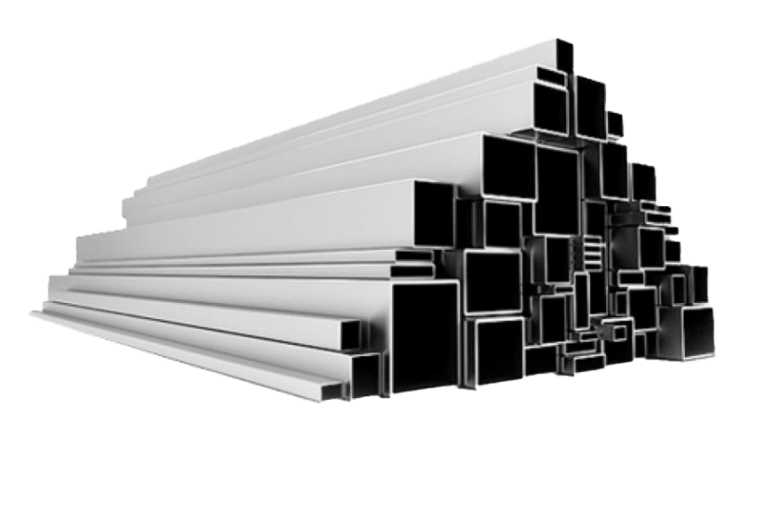
02 / Aluminium
Structural and architectural material
contributing to the lightweight character
of the interior system.
MAT / 02
08
Passive
strategies
Environmental strategy
Architecture
responding to
climate.
The environmental behaviour of the Eco Dôme
is explained through the movement of air and
the adaptive behaviour of the envelope.
Instead of presenting isolated strategies,
these diagrams show how the dome responds
to changing climatic conditions.
Passive system
Wind circulation, controlled openings and
adaptive envelope components work together
to regulate the interior climate.
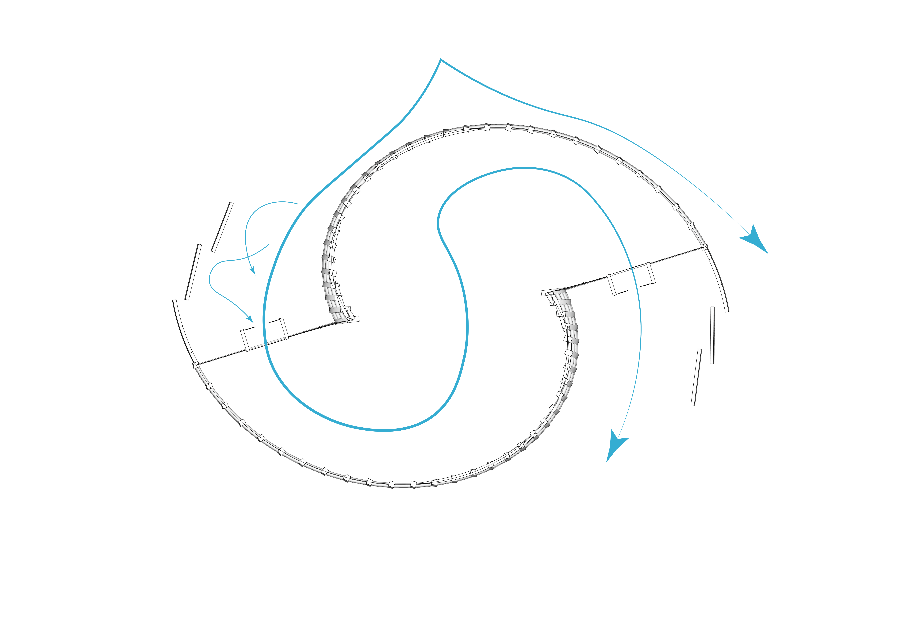
01 / Wind circulation — Plan
Diagram showing the movement of air through
the dome in plan and the relationship between
the prevailing winds, internal circulation
and climatic zones.
PASSIVE / 01
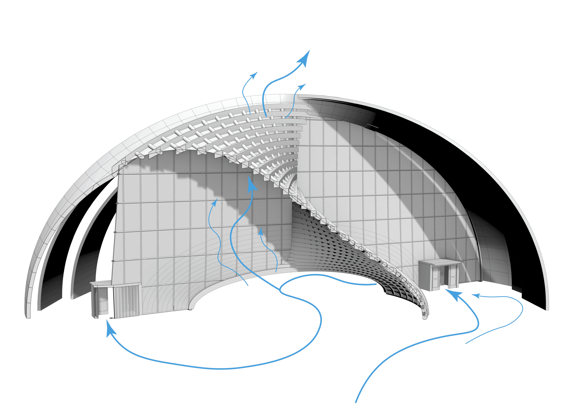
02 / Air movement — Section
Sectional diagram explaining the vertical
movement of air, thermal stratification and
the evacuation of accumulated warm air
through the upper part of the dome.
PASSIVE / 02
Variable aperture
9 blades / kinetic system
03 / Diaphragm Opening
A kinetic ventilation opening inspired by the mechanical
logic of an iris diaphragm. Nine overlapping blades pivot
around eccentric points to continuously modify the central
aperture. When the system opens, the increased free area
facilitates air movement; when it closes, the aperture is
reduced to limit direct exposure and airflow.
PASSIVE / 03
Dawn (0%)
Dusk (100%)
Sun position:
Noon
(90°)
Blade status:
Fully deployed
04 / Kinetic Brise-Soleil
Interactive simulation of the kinetic brise-soleil system
protecting the dome's glazed façade: three large curved
blades pivot around a fixed anchor point, continuously
adapting to the sun's path from dawn to dusk.
PASSIVE / 04
09
Hygrothermal
simulation
The environmental strategies are finally tested through
hygrothermal simulation.
The analysis is developed at two different scales:
first, through a material-based comparison using WUFI,
and then through an AI-assisted assessment of the complete
envelope geometry.
01
WUFI / Material comparison
Three envelope materials are evaluated under the
same climatic conditions: single glazing, metal
and ETFE. The simulations compare their thermal
behaviour throughout the year and during extreme
hot and cold periods.
01
Single glazing
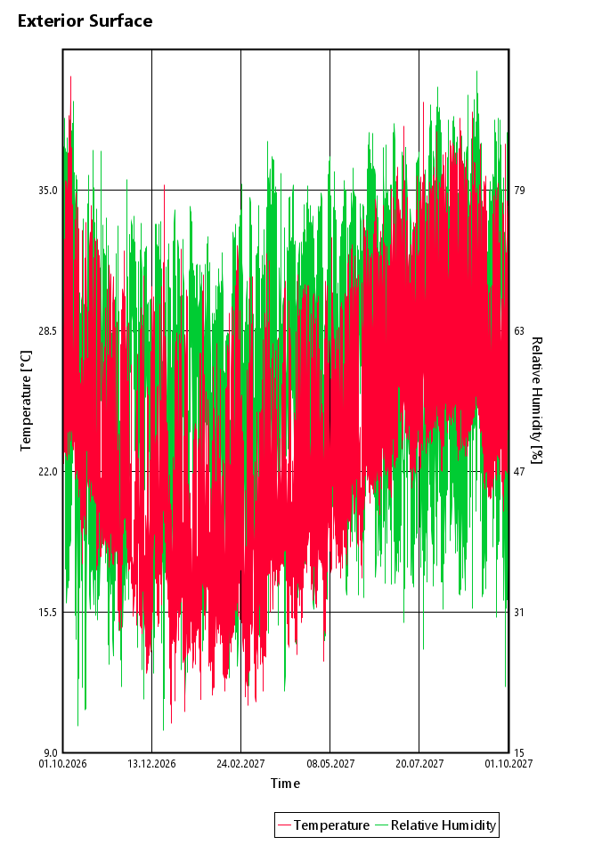
01 / Annual analysis
Exterior surface temperature
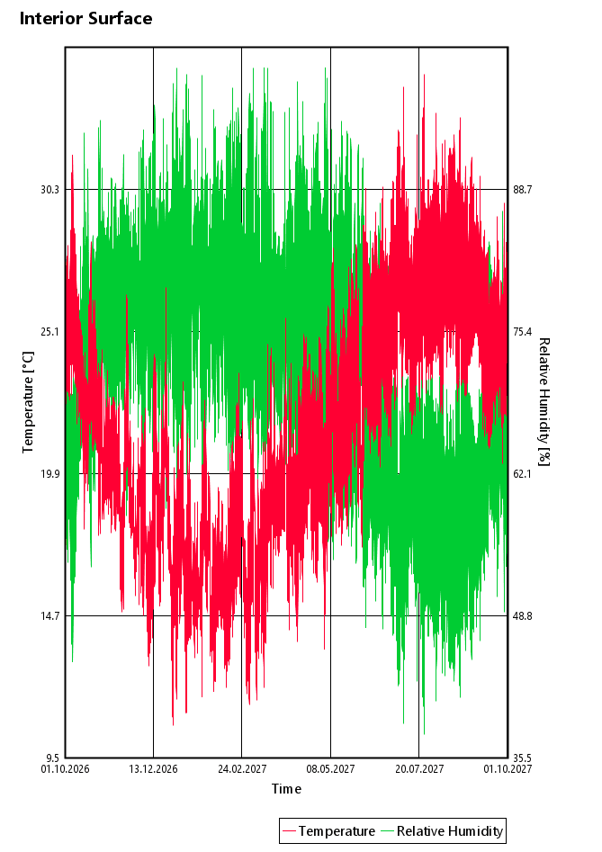
02 / Annual analysis
Interior temperature
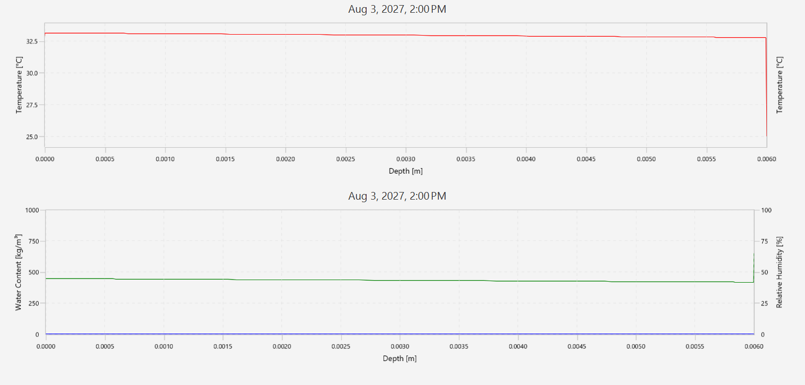
03 / Heat peak
Exterior / Interior
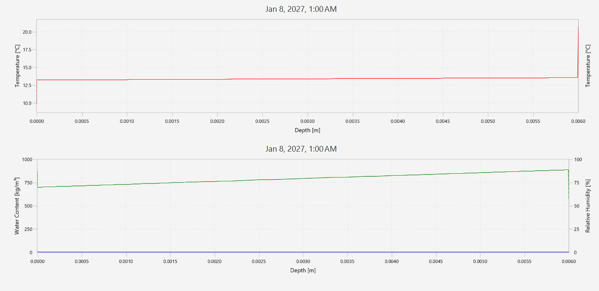
04 / Cold peak
Exterior / Interior
02
Metal
05 / Annual analysis
Exterior surface temperature
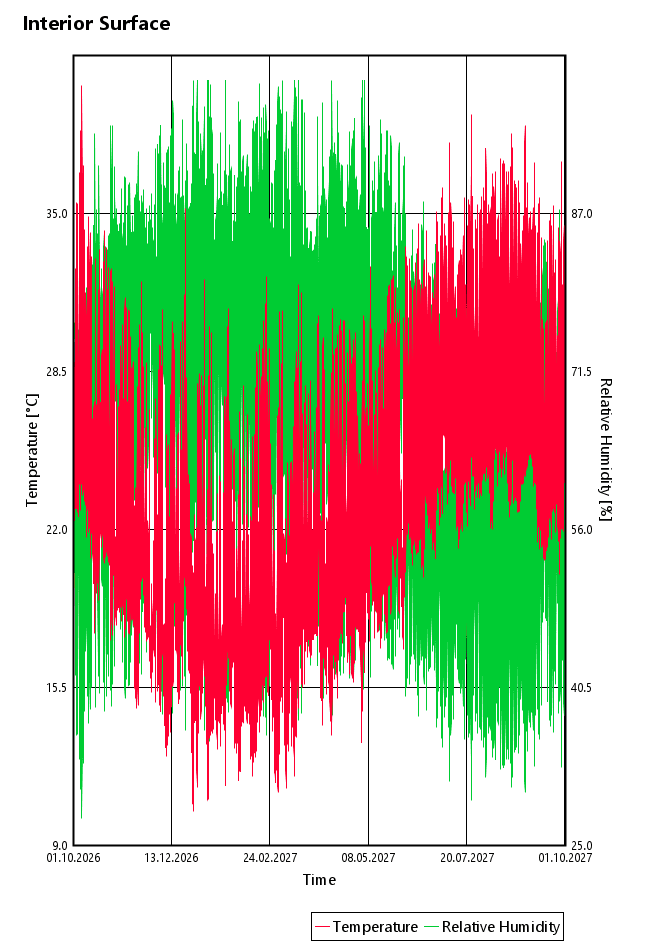
06 / Annual analysis
Interior temperature
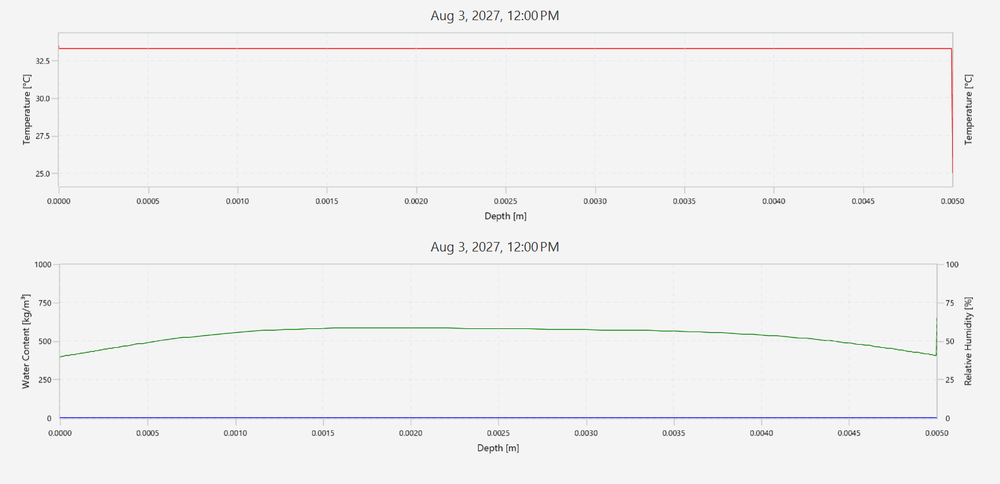
07 / Heat peak
Exterior / Interior
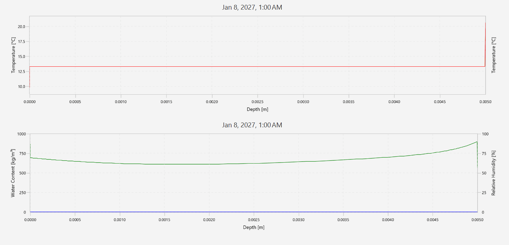
08 / Cold peak
Exterior / Interior
03
ETFE
09 / Annual analysis
Exterior surface temperature
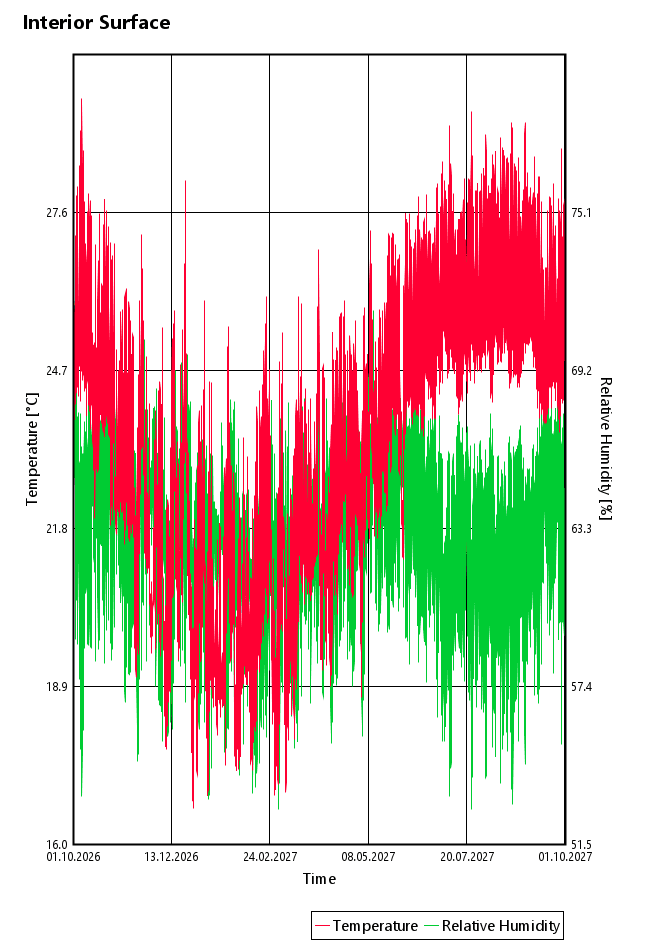
10 / Annual analysis
Interior temperature
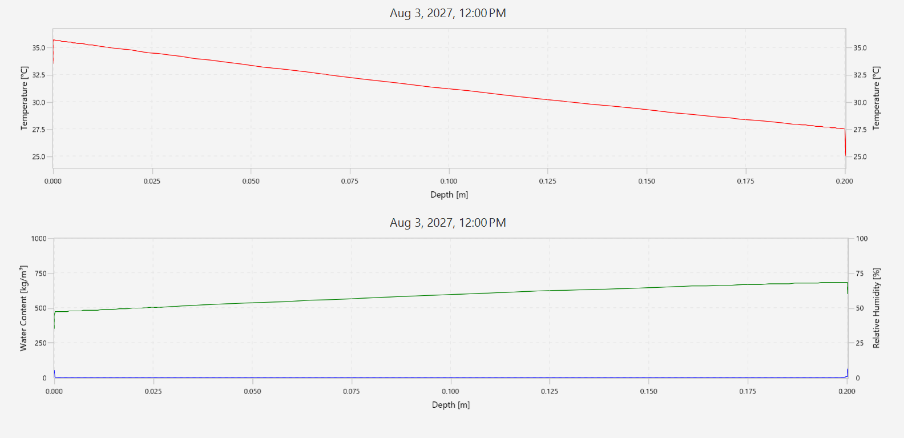
11 / Heat peak
Exterior / Interior
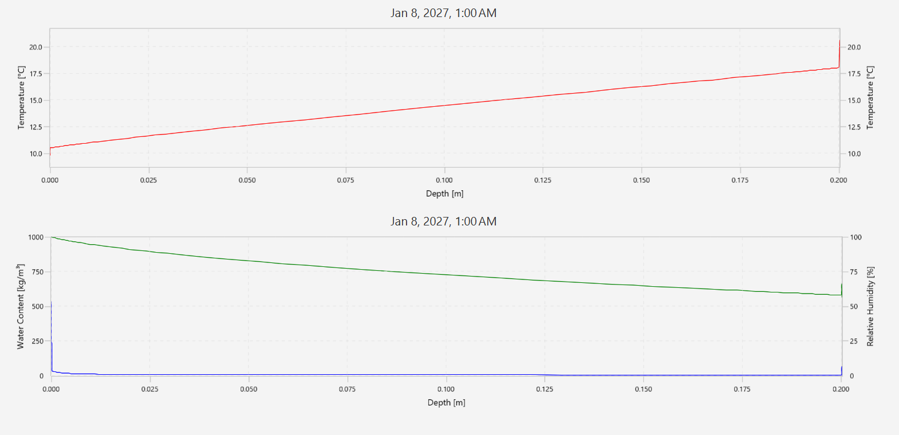
12 / Cold peak
Exterior / Interior
MATERIAL SCALE
↓
FULL-ENVELOPE SCALE
02
AI-assisted / Full-envelope simulation
After identifying the most relevant material
behaviours at the material scale, the analysis
is extended to the complete envelope geometry.
METHODOLOGY
Due to the complexity of the complete geometry and
the computational time required for a full
hygrothermal simulation, an AI-assisted model was
used to estimate the temperature and relative
humidity behaviour of the complete envelope.
The model provides a comparative overview of the
three material configurations before further design
development and validation.
01
Temperature
Comparative temperature evolution of the
three envelope materials across the complete
simulated period.
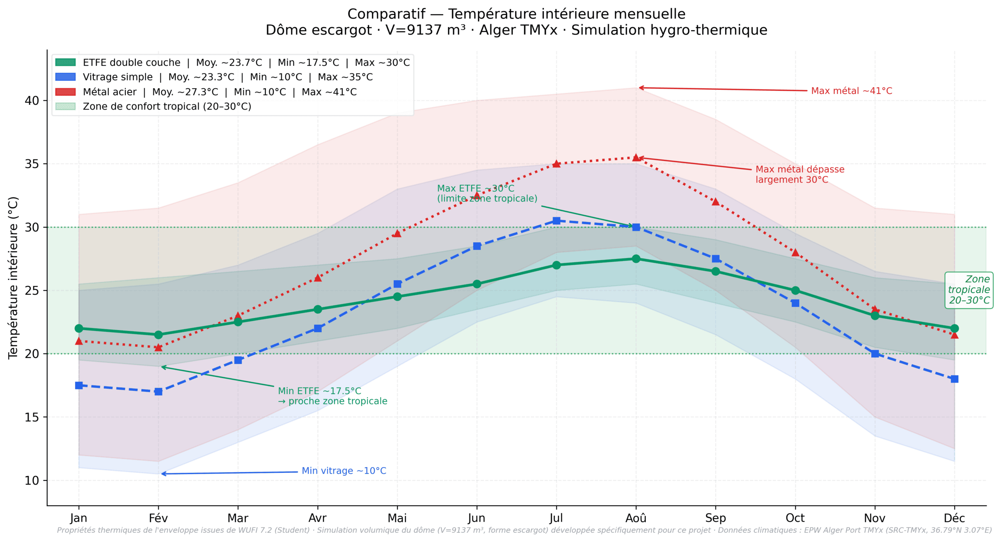
Full-envelope temperature comparison
/ Single glazing / Metal / ETFE
02
Relative humidity
Comparative relative humidity behaviour
of the three material configurations across
the complete envelope.
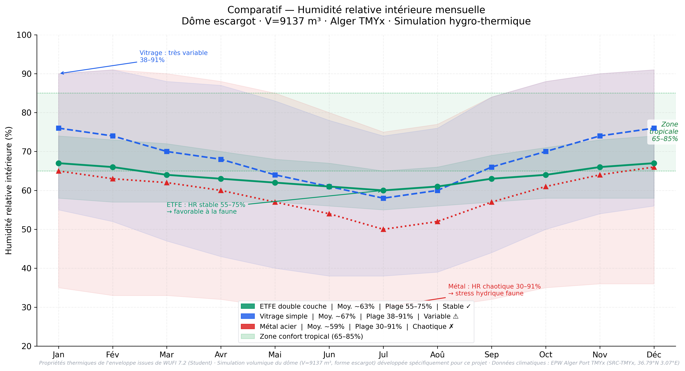
Full-envelope relative humidity comparison
/ Single glazing / Metal / ETFE
09 / Conclusion
The comparative analysis indicates that ETFE provides
the most favourable overall thermal and hygrothermal
response among the three investigated envelope
configurations.
10
Final renders
The final assets bring together the formal,
environmental and spatial investigations
developed throughout the project.
They present the Eco Dôme as the final
architectural expression of the relationship
between geometry, climate and living systems.
Eco Dôme du Hamma
Final perspective
Eco Dôme du Hamma
Project film
PROJECT / 02
Urban Project
Between Sky and Sea
An urban design project exploring the relationship
between the city, the landscape and the Mediterranean
coastline.
The project develops an urban strategy based on
connectivity, public space, landscape continuity
and the redistribution of urban programmes.
Location
Algiers
Type
Urban Design
Scale
Urban / Territorial
Approach
Urban Strategy / Landscape / Public Space
01
Problematic
The project begins with the identification of
the main urban, spatial and social issues affecting
the site.
Fragmented urban connections, discontinuous public
spaces and an unclear relationship between the
city and the coastline create a territory in need
of a coherent urban structure.
02
Concept
The concept establishes a continuous relationship
between the urban fabric, public spaces and the sea.
The project seeks to reconnect fragmented areas
through a sequence of public spaces and urban
connections, creating a stronger relationship
between the city and its landscape.
03
Urban Strategy
The urban strategy is developed through a series
of complementary interventions that restructure
movement, public space, landscape and programme.
Urban Strategy
Connectivity / Landscape / Public Space
04
Objectives
01
Urban Reconnection
Reconnect fragmented urban areas and
improve movement across the site.
02
Panoramic Sightlines
Reinforce the relationship between
the city, public space and the coastline.
03
Topographic Accessibility
Activate strategic areas through
new public and cultural programmes.
04
Creative & Economic Catalyst
Transform underused spaces into
connected urban destinations.
05
Actions
01
Strengthen pedestrian connections.
02
Create a continuous public-space network.
03
Introduce new urban and cultural programmes.
04
Improve landscape continuity.
05
Requalify strategic public areas.
06
Global
Masterplan
06.01 / Global urban development plan
Global Masterplan
Urban development plan
07
Programming
The masterplan is structured through a diversified
programme of urban, cultural, recreational and
landscape interventions.
A01
Cultural Facility
A02
Educational Facility
A03
Sports Facility
A04
Public Space
A05
Green Space
A06
Commercial Area
A07
Residential Area
A08
Mobility / Transport
08
Urban
Renders
A series of urban perspectives illustrating
the spatial atmosphere, public spaces and
architectural interventions developed through
the masterplan.
Unobstructed views of the new Port of Algiers
Public space
PROJECT / 03
Individual
Housing
A second-year (L2) architectural project
proposing an individual house in El Biar,
Algiers.
The project explores the relationship between
site topography, spatial organisation and the
domestic scale of individual housing.
Location
El Biar
Algiers, Algeria
Type
Residential / Individual Housing
Level
L2 Architectural Project
Approach
Site / Topography / Domestic Scale
01
Site
01.01 / Site Plan
N
Individual Housing
Site Plan
02
Plans
02.01 / Ground Floor Plan
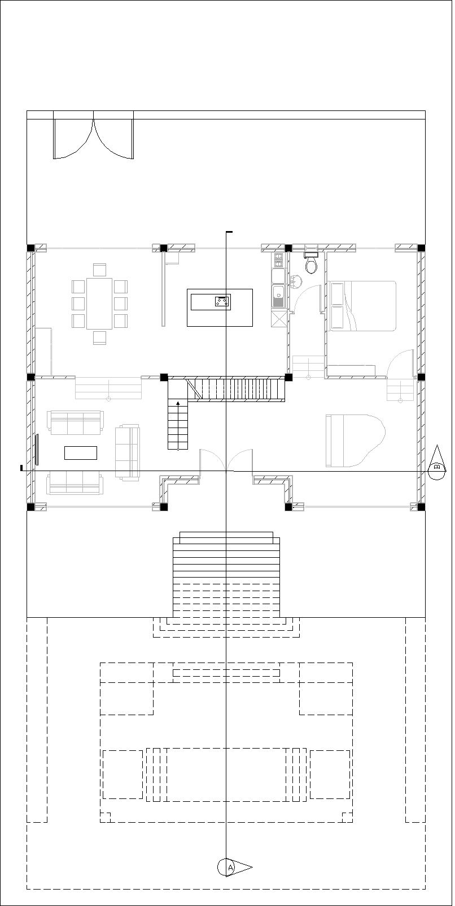
N
Ground Floor Plan
02.02 / Upper Floor Plan
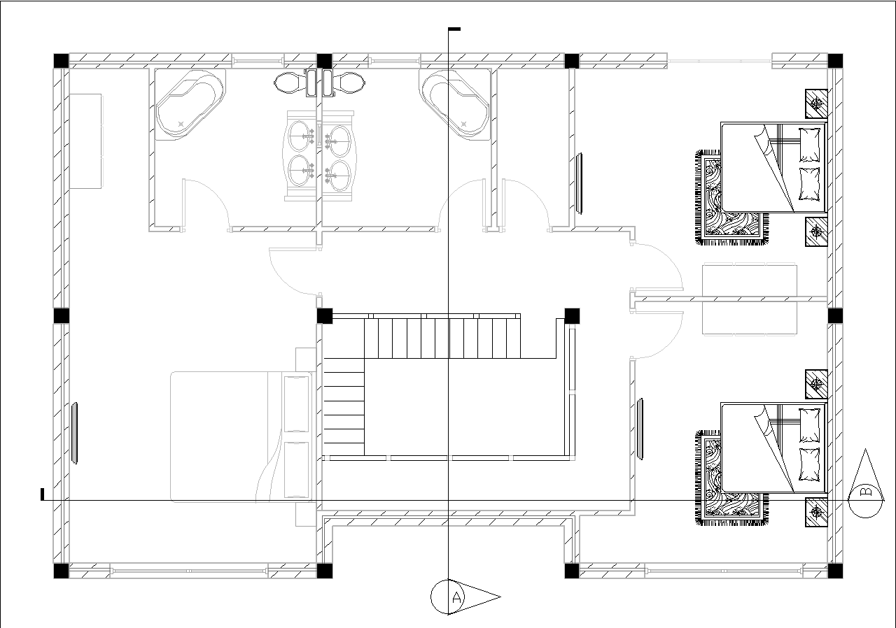
N
Upper Floor Plan
02.03 / Roof Plan
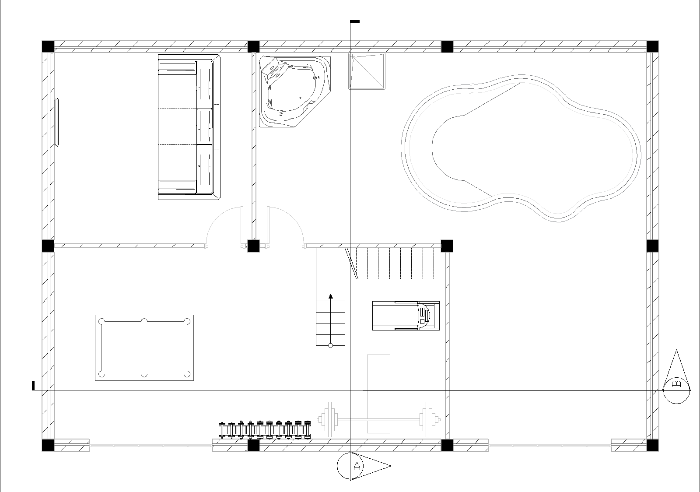
N
Roof Plan
03
Sections
03.01 / Architectural section
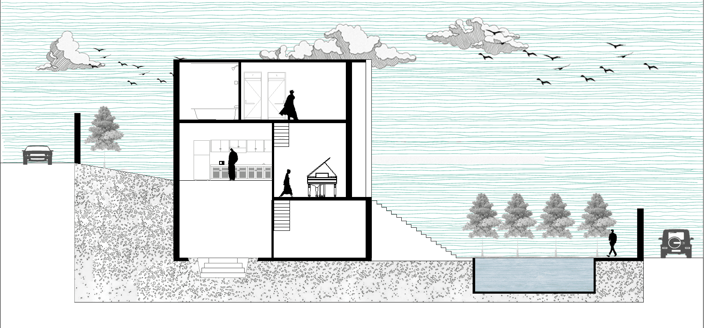
03.02 / Architectural section
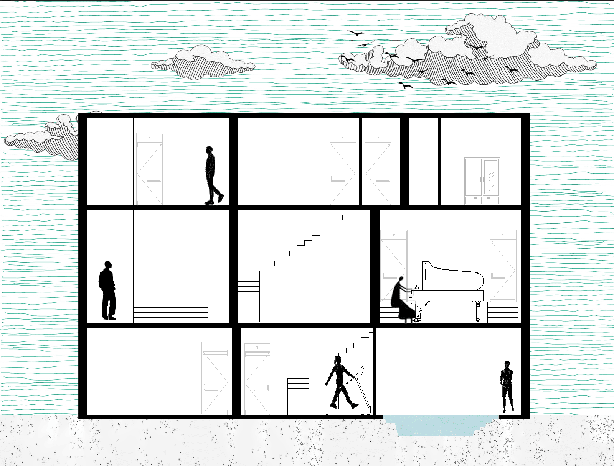
Architectural sections
Drawing studies
04
Renders
Individual Housing
Exterior / Interior views
Research
Future
research.
Current status
In development
01 / FUTURE EXPLORATIONS
Architecture,
computation
& environment.
A space dedicated to future explorations
in architecture, computation and
environmental design.
I hope to have the opportunity to develop
and publish research and investigations
in these fields in the future.
Professional Work
Practice.
Experience.
Architecture
beyond academia.
A selection of professional experiences developed
through architectural practice, project development
and construction-related work.
Explore the different professional environments
and the projects developed within each experience.
Professional practice
From the
drawing board
to the construction site —
understanding how architecture is designed,
developed and built.
01 / Internship
CNIC
Architectural Intern
June — October 2022
Algiers
During my first year of architecture studies,
I joined the CNIC as an architectural intern.
This experience introduced me to professional
architectural practice through project development,
architectural representation and the production
of design documents.
Selected Work
CNIC / 01
Military Mess
Blida
Architectural Proposal
2022
Blida, Algeria
Project
A preliminary architectural proposal for
a military mess in Blida, developed during
my first year of architecture studies while
undertaking an internship at the CNIC.
The project explored the organization and
architectural expression of a collective
dining facility through preliminary design,
representation and architectural documentation.
01 / RENDER
02 / RENDER
03 / SECTION
04 / FACADE
02 / Architectural Practice
Rehabilitation
Alger Centre
Architectural Practice
Algiers
A selection of rehabilitation projects
developed within the architectural practice,
documenting existing conditions, proposed
interventions and architectural development.
Selected Work
Get in touch
LET'S
BUILD.
Open to architectural collaborations,
computational design projects,
environmental work and new opportunities.